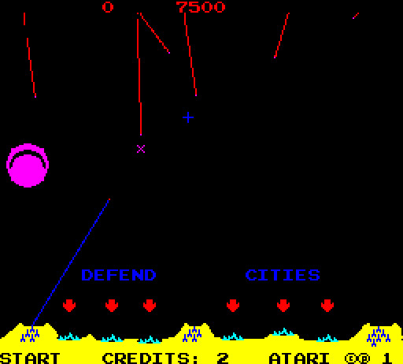
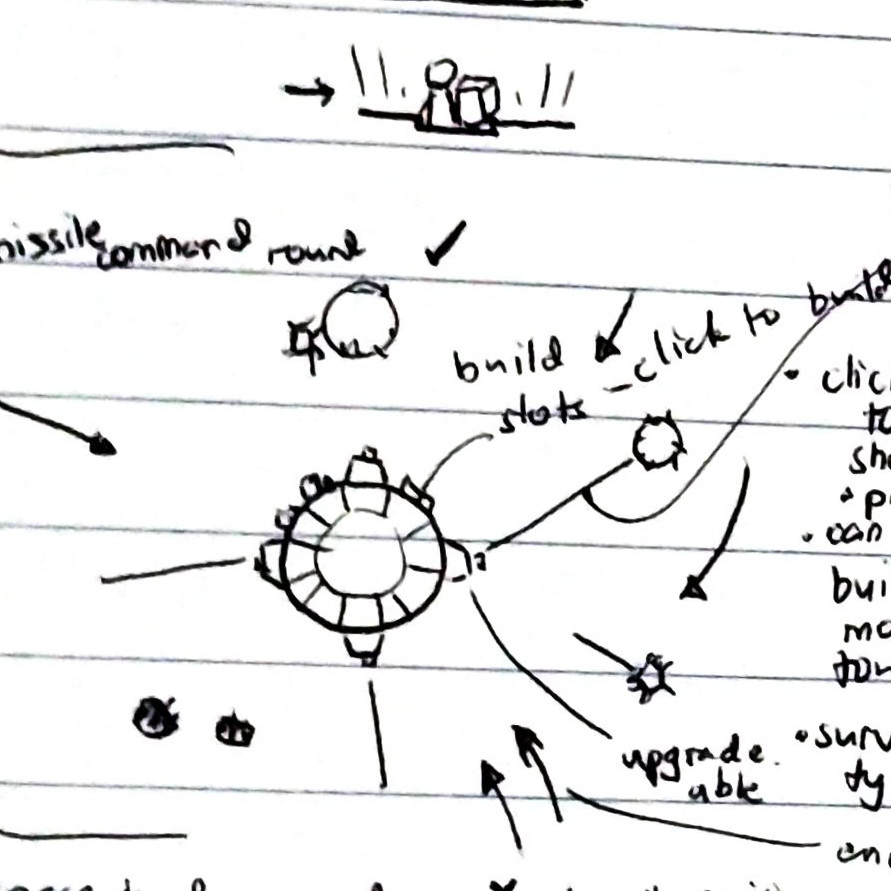

Planet Defense
Click to launch a missile from the nearest available battery. Missiles detonate on the clicked point.
This was my entry for the 38th Ludum Dare.
Ludum Dare is a Game Jam (a hackathon for games) held every four months. A theme is announced and participants create a game from scratch in 48 hours.
I used participated in these LD jams frequently. In LD 38, the theme was A Small World. Immediately after the theme was announced, I went self-brainstorming for game concepts. Fortunately, I settled on an idea before the 12-hour mark.
Missile Command, but circular.
 Missile Command
Missile Command was an arcade game from the ’80s. The usual formula of taking a classic and giving it a twist was not very original, but time was limited. Minus points for Innovation, I guess.
 Some design sketches showing some planned but unimplemented features.
Several hours later, I managed to come up with a working game/prototype.

Hooray! A finished game in exchange for precious hours of sleep!
The game was made with PixiJS, a scene-graph based 2D graphics engine for Javascript. I’m used to this graphics model since I started programming with Flash.
I initially tried Phaser, but it was too much for my taste. Having found out that Phaser uses Pixi underneath, I went with Pixi. I prefer the simple libraries. Enjoy the simple things in life.
Results
In the aftermath of the main event, participants will judge each other’s games for 3 weeks. The judging activity is actually nice. Most feedback is constructive and there are suddenly thousands of new free games for you to play!
Final judging results for PlanetDefense
My game did okay. Innovation’s low. Fair enough. It’s a clone.
Unexpectedly, Graphics is the highest. I think it’s something to do with the colors, ’cause the pixel art was definitely not great. The color scheme was also mentioned in the comments.
Here’s a little trick I did to improve the game’s color scheme: Just overlay a solid color on everything.
I learned this from a fellow gamedev somewhere on the Internet. Thanks, stranger!
This project’s source code is available on Github. Not the prettiest code. It’s a hackathon. No license yet.
You can play it standalone here.